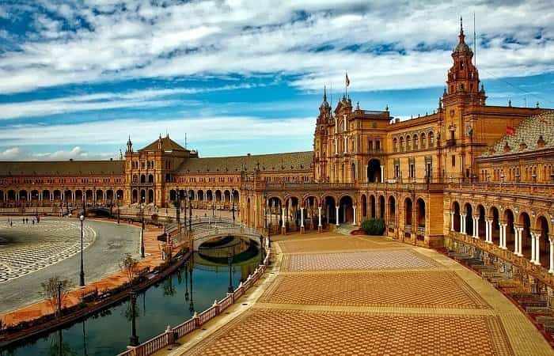
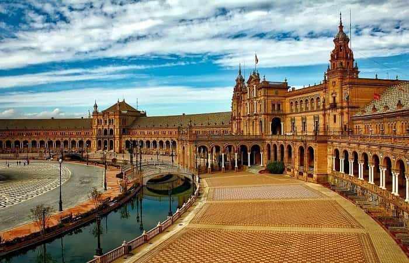

¡Bienvenidos a España!
Conocida por su historia, arte, corridas de toros, flamenco, playas y tantas horas de sol al año, es España, sin embargo, no sólo esto, sino mucho más. Esta tierra es y ha sido desde hace milenios uno de los centros culturales de Europa. Tantas de sus ciudades, e incluso los más perdidos enclaves, albergan monumentos de excepcional valor histórico y artístico, sin mencionar los extraordinarios parajes naturales con que esta añeja península cuenta.
En realidad es diferente de todo; de Europa, del mundo, y sobre todo de sí misma. Ya que es un país lleno de contrastes, comenzando por su clima y sus paisajes cuya diversidad le han acarreado el calificativo de "la pequeña Europa". Efectivamente en España encontramos climas y paisajes que recuerdan a puntos muy remotos del continente europeo o incluso del africano, nada extraño si consideramos que sólo está separada de Africa por el Estrecho de Gibraltar.

 
